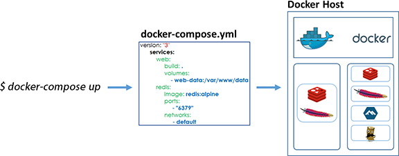

4.4. Running and working locally¶
To work with the projects locally there will be dependencies between microservices, i.e. for example the Dx29.Web project needs the annotation microservice or the disease calculation microservice among others to be deployed. Therefore, we should download all the repositories and launch them on the ports where the Dx29.Web project expects them or generate the Docker images (to save memory on our PC) and launch them on the corresponding ports with Docker Desktop.
This work can be very laborious, therefore, the Foundation29 developers team have created a project with the scripts and files that allow to deploy the Dx29 application environment locally in a quick and easy way. This project contains:
- The scripts to obtain the container registry images from an Azure environment. But this project will be privated for security, and users only can view an example of this script. Here are the steps to create this script and access the Azure resources that must be previously created by the user who is reading this guide if he wants to replicate it. Another way to perform these operations would be to create the Docker images locally with all the projects involved in the Dx29 application.
- A DockerCompose file that allows, once we have generated the images of the microservices locally, to raise a container organising them in the ports that the frontend expects and, if necessary, using the volumes that will contain the secrets.
Both functionalities can be found in the Dx29.Compose project.
Finally, it is important to note that whenever a microservice is upgraded, it will be necessary to perform the following steps to work locally:
- Obtain the updated image or generate it from the updated code.
- Execute DockerCompose so that the container that is executed locally uses the latest version of the image of this microservice.
4.4.1. Pull images¶
It is a scrpt programmed in python that will perform the tasks of:
- Logging into the Azure account.
- Login to the container registry where the images we want to obtain are located.
- Pull the latest version of an image and rename it in our PC to work with it. Keep in mind that the name we give it to work locally must coincide with the name expected by the DockerCompose file in order to later pull it up.
Thus, the script would look like this:
import os
# Login in Azure
os.system('az login')
# Login in container registry
os.system('az acr login --name <acr_name>')
# Docker pull images: Example image1
output = os.popen('az acr repository show-tags --name <acr_name> --repository <acr_repository_image1> --top 1 --orderby time_desc').read()
latest_tag = output.split("\n")
image_name = ('<acr_server>/<image1>:' + latest_tag[1]).replace(" ", "")
os.system('docker pull ' + image_name)
os.system('docker image tag ' + image_name + ' <image_name>:latest')
os.system('docker rmi ' + image_name)
Here we have only added the pull of the image1 as an example, we would have to repeat these lines of code for each image we want to get from the registry container.
To run the script, just execute: python name_script.py. In this project the script is called Scripts.py and is located in the PullImages folder of the project.
4.4.2. Docker compose¶
To build the microservices images with the configuration required by Dx29 we are going to use Docker Compose.
Compose is a tool for defining and running multi-container Docker applications. With Compose, you use a YAML file to configure your application’s services. Then, with a single command, you create and start all the services from your configuration.
Using Compose is basically a three-step process:
- Define your app’s environment with a Dockerfile so it can be reproduced anywhere.
- Define the services that make up your app in docker-compose.yml so they can be run together in an isolated environment.
- Run docker compose up and the Docker compose command starts and runs your entire app. You can alternatively run docker-compose up using the docker-compose binary.
So, Dx29 DockerCompose file is:
version: '3.4'
services:
dx29-bioentity:
image: dx29bioentity
ports:
- "8000:80"
dx29-termsearch2:
image: dx29-termsearch2
volumes:
- ./.secrets:/usr/src/app/secrets
ports:
- "8001:8080"
dx29-filestorage:
image: dx29filestorage
volumes:
- ./.secrets/appsettings.secrets.json:/app/secrets/appsettings.secrets.json
ports:
- "8100:80"
dx29-medicalhistory:
image: dx29medicalhistory
volumes:
- ./.secrets/appsettings.secrets.json:/app/secrets/appsettings.secrets.json
ports:
- "8101:80"
dx29-annotations:
image: dx29annotations
volumes:
- ./.secrets/appsettings.secrets.json:/app/secrets/appsettings.secrets.json
ports:
- "8102:80"
dx29-bionet:
image: dx29bionet
volumes:
- ./.secrets:/usr/src/app/secrets
ports:
- "8104:80"
dx29-localization:
image: dx29localization
volumes:
- ./.secrets/appsettings.secrets.json:/app/secrets/appsettings.secrets.json
ports:
- "8108:80"
dx29-mailing:
image: dx29-mailing
volumes:
- ./.secrets/appsettings.secrets.json:/usr/src/app/secrets/appsettings.secrets.json
ports:
- "8109:8080"
dx29-documents:
image: dx29-documents
volumes:
- ./.secrets/appsettings.secrets.json:/app/secrets/appsettings.secrets.json
ports:
- "8111:80"
dx29-legacy:
image: dx29-legacy
volumes:
- ./.secrets/appsettings.secrets.json:/usr/src/app/secrets/appsettings.secrets.json
ports:
- "8112:8080"
We can see that some of the microservices also require the appsettings.secrets.json file to be added. This is located in the .secrets folder of the project and must be filled with the keys and secret values of the Azure services needed to run the application.